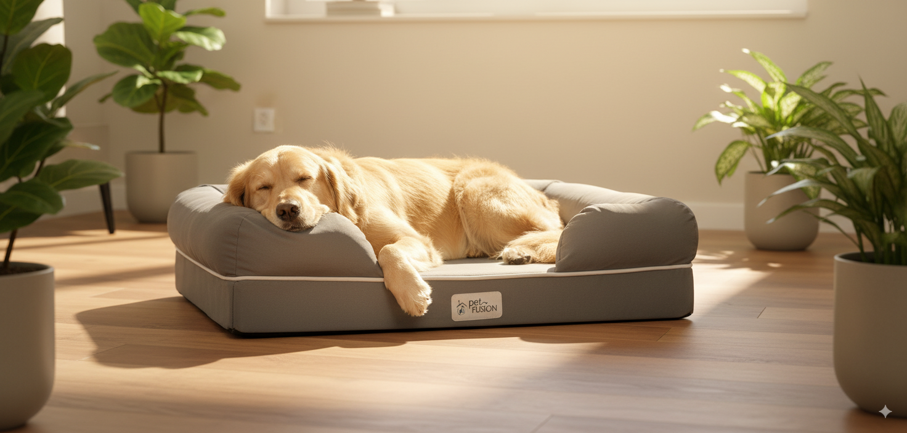

Eco-Friendly Comfort: Welcoming Your Furry Friend with the PetFusion Ultimate Dog Bed & Lounge
Bringing a new pet home is an incredibly exciting time, filled with puppy kisses (or kitten cuddles!), playful antics, and the joy of unconditional love. But amidst the excitement, responsible pet ownership also requires thoughtful choices, especially when it comes to providing a comfortable and safe environment for your new companion. This is where the PetFusion Ultimate Dog Bed & Lounge stands out, offering a blend of luxurious comfort and eco-conscious design that's perfect for first-time pet owners.
A Sustainable Sleep Solution for Your Beloved Pet
The decision to welcome a pet into your life is a big one, and it's a commitment that extends to every aspect of their well-being. From their food to their toys, and most importantly, their bed, you want to ensure you're providing the best possible care. The PetFusion Ultimate Dog Bed 🛏️ this premium orthopedic dog bed & Lounge excels in this regard, not only by providing a supremely comfortable resting place for your furry friend but also by prioritizing sustainability and eco-friendly materials.
Product Overview: Comfort Meets Conscious Design
The PetFusion Ultimate Dog Bed & Lounge isn't just another dog bed; it's a thoughtfully designed haven for your pet. Its unique design combines a bolster-style lounge area with a plush, orthopedic sleeping surface. This dual functionality caters to a variety of dog breeds and sleeping preferences. Whether your pet prefers to snuggle into a supportive bolster or stretch out on a flat surface, this bed offers the perfect solution.
One of the most appealing aspects of the PetFusion bed is its commitment to eco-friendly materials. Unlike many pet beds that utilize synthetic fillers and fabrics, the PetFusion Ultimate Dog Bed & Lounge utilizes recycled materials, minimizing its environmental impact. This commitment to sustainability is crucial You can 🏆 get the ultimate comfort bed here for environmentally conscious pet owners who seek products that align with their values. The durable, water-resistant cover is easy to clean, ensuring hygiene and longevity, further reducing the need for frequent replacements.
Benefits and Advantages: More Than Just a Bed
The benefits of choosing the PetFusion Ultimate Dog Bed & Lounge extend beyond its eco-friendly construction. Its orthopedic design provides essential support for your pet's joints, particularly beneficial for older dogs or those with joint issues. This support promotes healthy sleep and can contribute to a more active and playful companion.
The durable construction ensures the bed will withstand even the most enthusiastic chewers and diggers. The removable and washable cover simplifies cleaning, making it a practical choice for pet owners who value hygiene and convenience. The bolster design provides extra head and neck support, creating a secure and comforting space for your pet to relax and unwind.
Practical Usage Tips for First-Time Pet Owners
Choosing the right size is crucial. Measure your pet to ensure you select a bed that provides ample space for comfortable sleeping and lounging. Regularly check the bed for any signs of wear and tear and clean the cover as needed. Familiarize your pet with the bed gradually, making it a positive and inviting space. Consider placing a familiar blanket or toy on the bed to encourage your pet to use it.
A Sustainable Choice for a Happy Pet
In the world of pet products, it's becoming increasingly important to make choices that are both beneficial for our pets and responsible for the environment. The PetFusion Ultimate Dog Bed & Lounge successfully achieves this balance. By choosing this eco-friendly dog bed, you're not only providing your pet with exceptional comfort and support but also contributing to a more sustainable future. It's a thoughtful investment that demonstrates your commitment to both your pet's well-being and the planet. The combination of comfort, durability, and sustainability makes the PetFusion Ultimate Dog Bed & Lounge a top choice for first-time pet owners seeking a responsible and high-quality product. It's an investment in both your pet's happiness and a healthier planet.